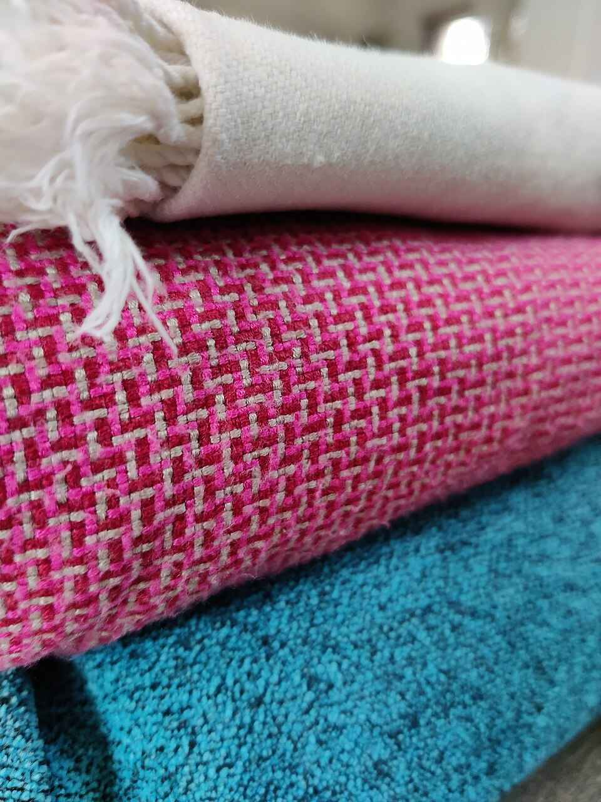

KHES WEAVING
REGION OF ORIGIN
NORTHWESTERN INDIA, TRADITIONALLY ASSOCIATED WITH PUNJAB & PANIPAT , HARYANA, INDIA
COMMUNITY/ PRACTITIONERS
TRADITIONAL WEAVERS OF PUNJAB-PANIPAT REGION
TEXTILE TYPE
HANDWOVEN DOUBLE CLOTH TEXTILE
MATERIAL
TRADITIONALLY COTTON, SILK WAS USED
TECHNIQUE
TRADITIONALLY COTTON, SILK WAS USED
MOTIFS/ DESIGN
GEOMETRIC AND CHECKED PATTERNS
HISTORICAL BACKGROUND
KHES DEVELOPED SEVERAL CENTURIES AGO UNDER MUGHAL RULE WHEN COTTON BLANKETS WERE IMPORTANT ARTICLES OF USE AND TRADE.
TRANSFORMATION
TRADITIONAL KHES WAS WOVEN ON SMALLER LOOMS AND LARGER PIECES COULD BE ASSEMBLED FROM MULTIPLE WIDTHS. CONTEMPORARY PRODUCTION ALSO USES JACQUARD LOOMS FOR FIGURATIVE DESIGNS AND PATTERNS.
CURRENT STATUS
NEEDS SAFEGUARDING / DECLINING TRADITIONAL PRACTICE
THREATS/CHALLENGES
DECLINE OF TRADITIONAL HOUSEHOLD WEAVING, CHANGES IN PRODUCTION TECHNOLOGY, CHANGING MARKETS AND THE SHIFT FROM TRADITIONAL GEOMETRIC KHES TO NEWER MACHINE JACQUARD PRODUCED DESIGNS